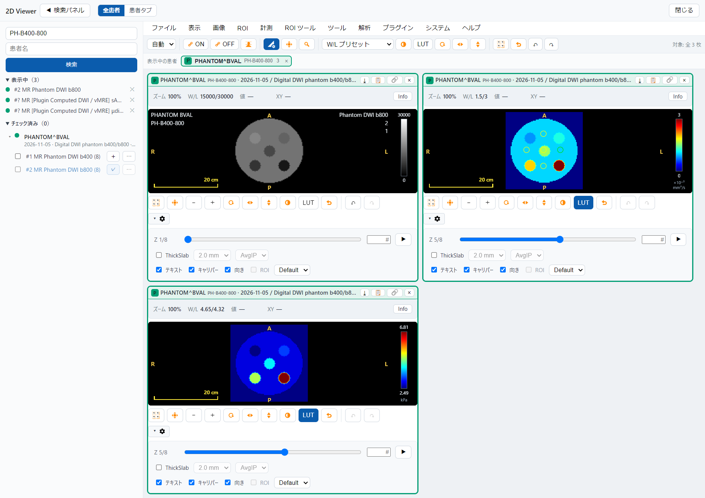
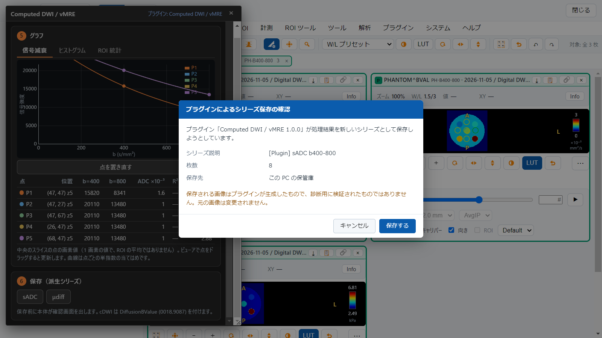
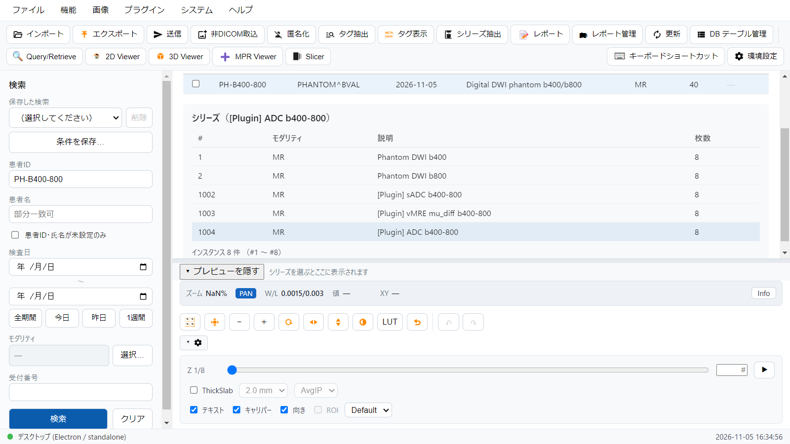
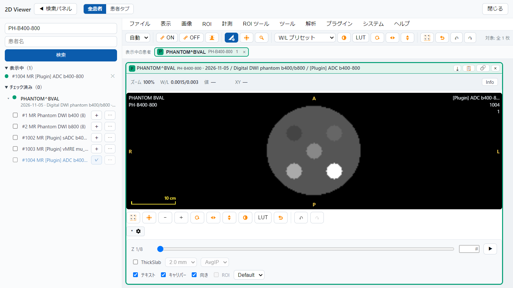

GRAPHY-NEXT v0.6.1 / 操作ガイド
プラグインの結果を、保管庫に保存せずに並べて見られる「一時タイル」と、プラグインが保存する派生シリーズの扱い（表示の窓・シリーズ番号）の改良です。例として、同時に公開する Computed DWI / vMRE プラグインを使います。
プラグインの結果を、一時タイルで見る保管庫に保存せず、元のシリーズと並べる。スケールバー付き
プラグインが保存した派生シリーズ確認画面・連番のシリーズ番号・表示の窓
プラグイン開発者向けの追加
01 / 2D Viewer ＞ 解析 ＞ プラグイン

プラグインが計算した結果は、一時タイルとして 2D ビューアに並びます。保管庫には保存されません（タイルの見出しは「未保存」）。閉じれば消えます
結果のタイルは、元のシリーズと同じ位置・同じスライス数で作られます（幾何は元のシリーズから引き継ぎます）。元の画像と見比べられます
タイルにはスケールバーが出ます。値の単位（×10⁻³ mm²/s、kPa）はカラーバーの横に出ます
プラグインが置いた点（円）は、ビューアでドラッグして動かせます。一時タイルへの点・ROI は、保管庫には保存されません
この画面は Computed DWI / vMRE プラグイン（別冊の操作ガイド）の例です。ほかのプラグインも、同じ一時タイルで結果を見せられます。
02 / プラグインの保存 ＞ 派生シリーズ

プラグインが結果を保存するときは、必ず本体の確認画面が出ます。「保存する」を押すまで、何も書き込まれません

保存した系列は、元と同じ検査に[Plugin] 付きで入ります。シリーズ番号は元の番号 + 1000 から、検査内の既存の番号と重ならない連番になります（同じ元から何本作っても重なりません）

表示の窓: 元のシリーズの窓は引き継がず（元の画像とは別の量のため）、プラグインが指定した窓で開きます。ADC なら 0〜3 ×10⁻³ mm²/s で、体部と円が見えます。窓は、画面で変えた値がそのまま保存に反映されます。
保存した ADC などは、窓が値域（幅 0.003 など）に合うよう、窓の計算式を「中心 ± 幅/2」（VOI LUT Function = LINEAR_EXACT）で保存します。
03 / そのほか
openTransientSeries: 計算結果を保管庫に保存せずに、元のシリーズの幾何で並べる。スケールバー・初期スライスの指定つき。createRoi の PointROI（中心の 1 点）。一時タイルの上にも作れる。作った点・ROI は一時タイルでは保存されない。saveDerivedSeries の window: { center, width }。保存する値の単位での窓。省略すると窓は書かず、ビューアが値域から決める。examples/plugin-template/graphy-plugin.d.ts に上記を追記済み。Computed DWI / vMRE プラグイン v1.0.0 は、この版（0.6.1 以上）が必要です。操作は、プラグインの操作ガイド（別冊 PDF）を参照してください。